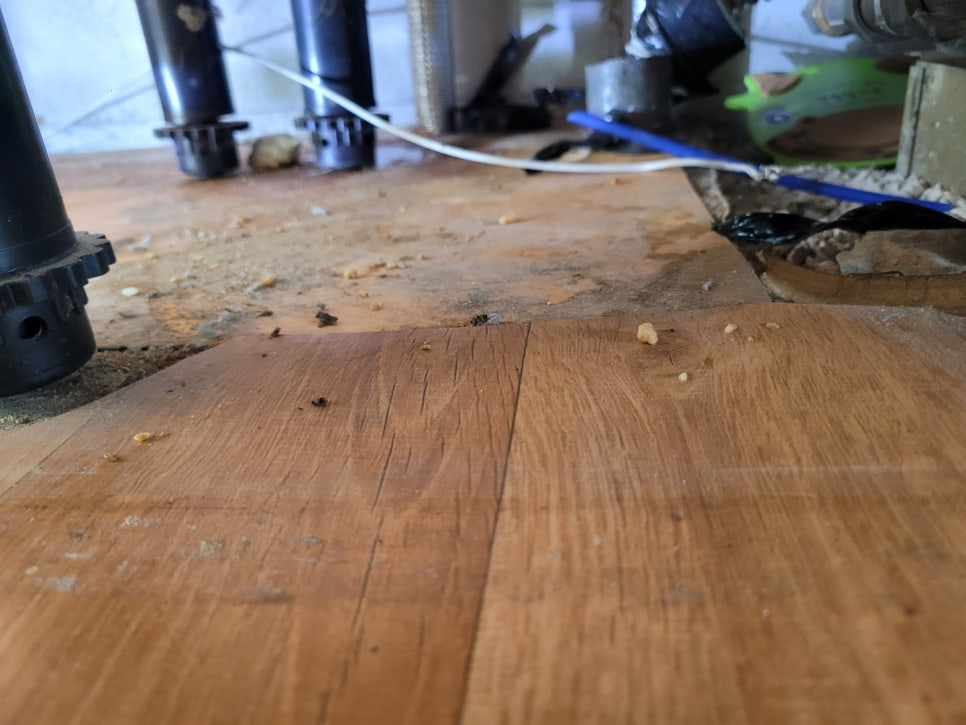
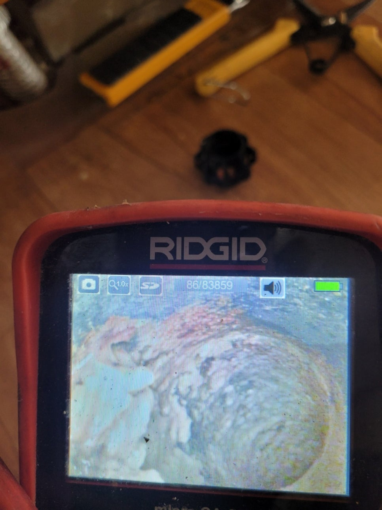
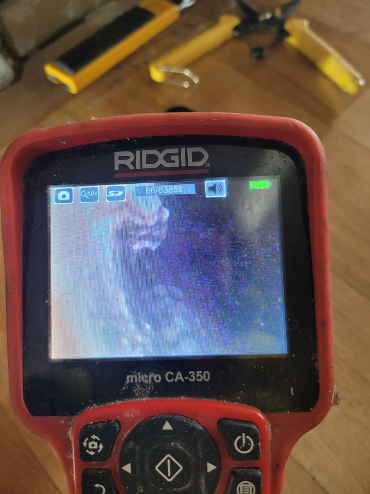
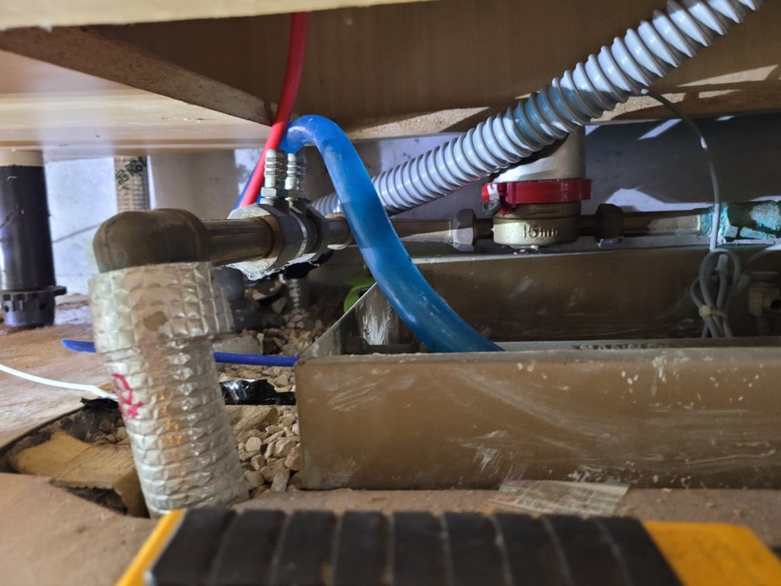
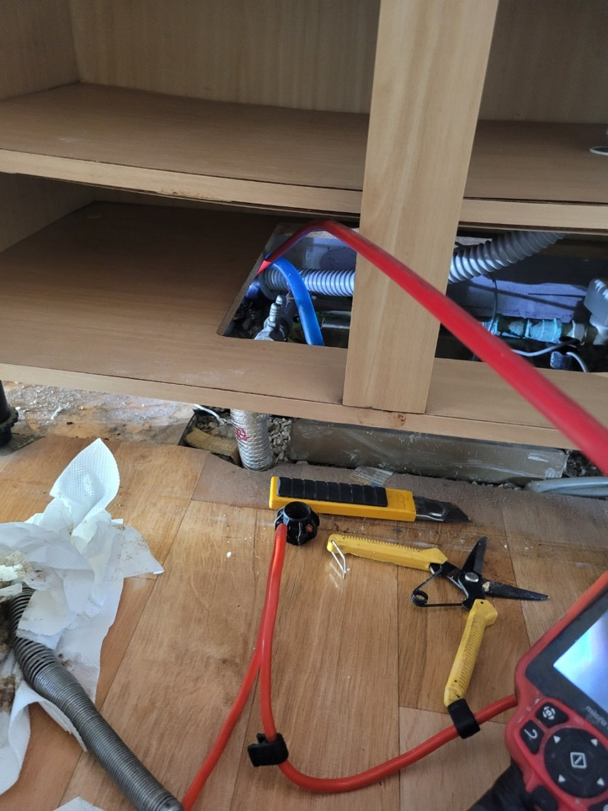
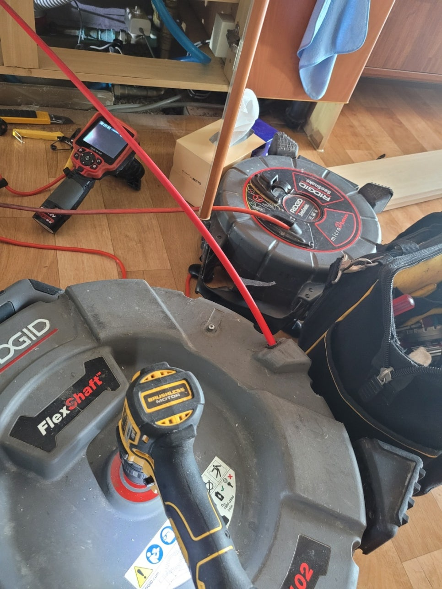
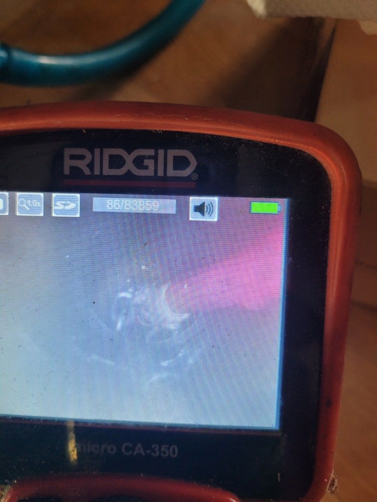

🏠 향남 공장하수구막힘 구문천리 발안하수구 완벽하게 뚫었습니다!
용인 향남 싱크대막힘 전문 시공 후기

📋 작업 개요
- 위치: 용인 향남, 향남, 용인
- 서비스 유형: 싱크대막힘, 하수구막힘, 배관막힘, 누수수리, 역류해결, 뚫는업체, 고압세척
- 작업 일시: 2023. 7. 17. 17:46
- 업체명: 하수구수사대 (010-5615-2118)
🔍 문제 상황
안녕하세요. 하수구수사대입니다.
공간을 이용하는 사람이 많을수록 공용으로 배출되는 하수구 설비에 문제가 생기는 경우가 더 많이 있습니다.
이런 경우에는 크게 불편함이 느껴질 수 밖에 없는데요. 하수구 설비에 이상이 생기게 되면 당장 배수구 사용이 어려워질 뿐만 아니라 심한경우에는 역류까지 발생을 할 수 있기 때문에 보다 신속하게 해결을 하는 것이 중요하다고 할 수 있습니다. 이번에 소개할 현장 역시 향남 공장하수구막힘 구문천리 발안하수구현장이었습니다.
공장으로 운영되고 있는 건물인 만큼 운영에도 차질이 생기면서 급하게 연락을 주신 곳이었습니다. 현장 출동후기를 지금부터 말씀드리도록 하겠습니다. 향남 공장하수구막힘 구문천리 발안하수구 현장과 같이 이렇게 실내에서 역류 현상이 발생하게 되면 불편하고 다급해 질 수 밖에 없습니다.

🔎 원인 분석
💡 전문가 진단: 공간을 이용하는 사람이 많을수록 공용으로 배출되는 하수구 설비에 문제가 생기는 경우가 더 많이 있습니다.
먼저 어떤 원인으로 하수구막힘이 발생을 했고 어떤 과정으로 해결을 해드릴지 파악을 하기로 하였는데요.
회사 겸 공장으로 운영이 되고 있었던 이번 현장은 매일같이 상주를 하고 계시던 관리인분께서 어느날부터 하수구쪽에 이상을 느끼고 연락을 주셨는데요. 건물 내부에서 어느 날부터인가 물이 내려가는 속도가 현저히 느려지는 것을 감지하고 점검을 해야 하겠다는 생각을 하셨다고 합니다.
그러던 중에 갑작스럽게 화장실과 싱크대에서도 물이 배수가 되지않게 되었고 물이 고이면서 오히려 역류가 발생했다고 하셨습니다. 이로인해서 매일 출퇴근을 하는 직원들도 피해를 보고 있는 상황이었기 때문에 신속하게 처리를 해드려야 했습니다.
문의전화 010-4437-9128
저희 하수구수사대에서는 이렇게 하수구막힘이 발생을 하게되면

🔧 작업 과정
보다 신속하게 현장에 출동을 하는 것을 원칙으로 하고 있습니다.
그렇기 때문에 고객님께서 말씀해 주신 일정에 맞춰서 최대한 빠르게 달려가고 있습니다. 현장에 도착을 하면 피해가 발생한 지점의 원인부터 확인을 해보는데요. 화장실과 싱크대 근처로는 물이 아예 빠지지 않고 고여있는 상황이었습니다.
이대로 지체를 하게 되면 누수가 발생할 위험도 있을 수 있기 때문에 빠른 조치를 하기로 하였습니다. 고객분들과 함께 현장에 대한 전체적인 문제점과 원인에 대해서 점검을 하고 내시경 장비를 통해서 본격적으로 문제 확인을 해보았습니다.
내시경 카메라는 배수관 내부의 모습을 카메라로 확인을 할 수 있기 때문에 정확한 원인 파악이 가능할 수 있는데요.
보이지 않는 배수관 내부는 사실상 이런 내시경 장비 없이 확인을 하는 것은 불가능한 것입니다. 향남 공장하수구막힘 구문천리 발안하수구 내시경 작업을 보다 효율적으로 진행하기 위해서 막힘이 심각한 구간을 우선적으로 작업을 하였습니다.
내시경 확인 결과 그동안 건물을 이용하면서 발생이 된 각종 이물질 덩어리들이 자리를 잡으면서 많은 양의 오염물질들이 쌓이게 된 것입니다. 문제가 되는 지점에 내시경을 삽입하고 확인후 본격적인 작업에 들어갔는데요. 외관상으로 볼 몰랐던 문제점들이 드러났고 평소 하수구 관리를 제대로 하지 못하면 악취가 올라오는 경험을 하셨을 수도 있습니다.
내부에 이물질을 제거하기 위해서 고압세척을 진행하기로 하였습니다.


✅ 작업 완료
저희 하수구수사대에서 쓰는 전문장비로 배관의 손상없이 내부를 깨끗하게 세척해줄 수 있는 장비입니다. 내시경을 통해서 내부의 상황을 확인하면서 고압세척 작업을 진행하였습니다.
고압세척은 악취를 유발하는 이물질들을 모두 제거를 하면서 막힘을 해결을 하였습니다. 현장 해결후에 다시 배관내시경을 통해서 내부를 보니 깨끗해진 배관을 확인할 수 있었습니다. 이번 현장도 하수구막힘해결을 깔끔하게 진행해 드렸습니다.




⚠️ 베란다 누수 및 방수 관리 방법
- ✅ 비가 많이 올 때 창틀 주변이나 아래층 천장에 얼룩이 생기는지 정기적으로 확인해 보세요.
- ✅ 우수관 주변 실리콘 마감이 들뜨거나 깨진 틈새가 있는지 손상 여부를 수시로 체크하세요.
- ✅ 베란다 바닥 타일의 줄눈(메지)이 소실되면 그 틈으로 물이 침투하여 누수가 유발됩니다.
- ✅ 누수 의심 증상 발견 시 방치하면 아래층 손실이 커지므로 즉시 전문가의 진단을 받으십시오.
💡 핵심 정리
- 확실한 장비 작업(내시경 점검 및 샤프트 스케일링)으로 원인을 뿌리 뽑습니다.
- 작업 후 1년 이내에 동일한 부위 재발 시 100% 무상 A/S 서비스를 보장합니다.
- 서울 · 경기 · 인천 전 지역에 24시간 언제든 긴급 출동할 수 있도록 항시 대기 중입니다.
❓ 자주 묻는 질문 (FAQ)
🚨 용인 향남 싱크대막힘 문제로 고민이신가요?
정확한 원인 진단과 확실한 시공으로 재발 없는 해결을 약속드립니다.
24시간 긴급 출동 | 서울 · 경기 · 인천 전지역 | 1년 내 재발 시 무상 A/S